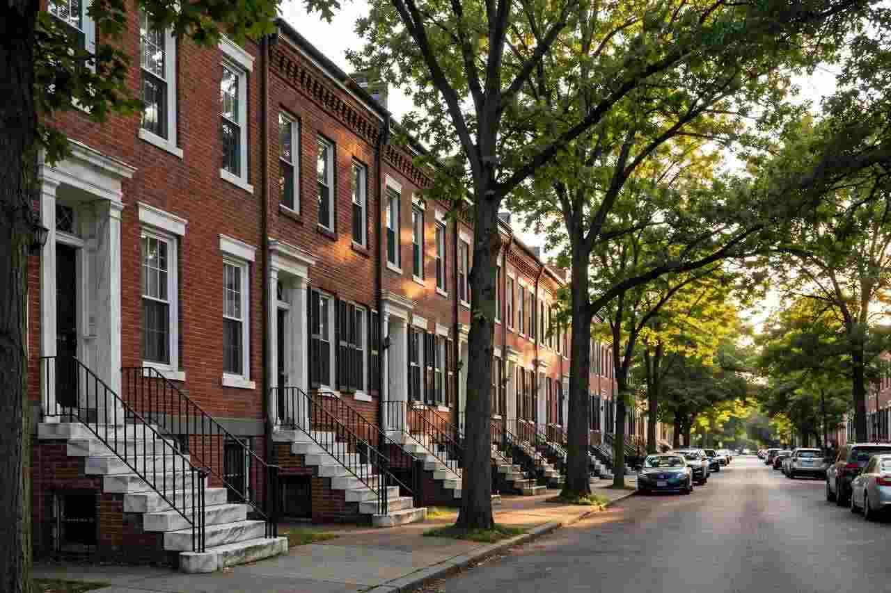

Rodent Control · Owings, MD
Fast Rodent Control in Owings, MD
If rodents have moved into your Owings home or business, Murvo can help today. Our local, licensed crews provide same-day inspection, targeted removal, durable exclusion, and cleanup, all under one flat-rate written quote with a written guarantee. No hourly billing and no surprise add-ons, just rodent specialists serving Owings and communities throughout Calvert County every day of the week. Local crews cover 1 ZIP codes in the Owings area, from Baden to the far side of Calvert County.
24/7Availability
1ZIP codes covered
Same-dayResponse
Licensed · Upfront options · Written guarantees · Fully insured
Owings at a glance
Local Rodent Control for Owings, MD.
Calvert County
Countycentral Maryland
RegionWaldorf · 18 mi
Nearest metro19 miles south of Annapolis
From Annapolis1
ZIP codes covered Service by service in Owings
Rodent Control Services Available in Owings
The full range of residential and commercial rodent services in Owings and Calvert County - built around the species and housing here, from emergency removal and same-day control to exclusion, proofing, trapping, cleanup, and damage repair. Every service below is quoted flat-rate in writing and backed by our workmanship guarantee.
- 01Rodent Control↗
- 02Rodent Inspection↗
- 03Rodent Removal↗
- 04Rodent Exclusion↗
- 05Rodent Proofing↗
- 06Rat Control↗
- 07Mice Control↗
- 08Mouse Removal↗
- 09Rat Removal↗
- 10Rodent Trapping↗
- 11Rodent Baiting↗
- 12Rodenticide Application↗
- 13Attic Rodent Removal↗
- 14Crawl Space Rodent Removal↗
- 15Wall Rodent Removal↗
- 16Kitchen Rodent Control↗
- 17Garage Rodent Control↗
- 18Commercial Rodent Control↗
- 19Residential Rodent Control↗
- 20Emergency Rodent Removal↗
- 21Same-Day Rodent Control↗
- 22Rodent Damage Repair↗
- 23Rodent Waste Cleanup↗
- 24Rodent Disinfection↗
- 25Rodent Odor Removal↗
- 26Dead Rodent Removal↗
- 27Rodent Dropping Cleanup↗
- 28Rodent Exclusion for Roofs↗
- 29Rodent Exclusion for Vents↗
- 30Rodent Exclusion for Chimneys↗
Rodent Control in Owings
Rodent Control in Owings
In Owings, historic rowhomes, brick twins, older apartments, and wooded suburban single-family homes give rodents warmth, shelter, and easy routes through alley-facing doors and garages, basement foundations, sewer laterals, and gaps around utility lines, especially once nights turn cold across Calvert County. Our licensed, insured technicians identify the species, map active runways, and build a control plan around your home rather than a generic spray. Every visit is documented with photos, trap records, and clear next steps for your household.
In Owings, rodent control is not a generic spray-and-go service. Rodents exploit alley-facing doors and garages, basement foundations, sewer laterals, and gaps around utility lines in historic rowhomes, brick twins, older apartments, and wooded suburban single-family homes, and a fix that ignores those routes does not last. Murvo's Owings team inspects first, shows you the evidence - droppings, gnaw marks, entry gaps - and then lays out the work with a flat-rate written quote. We serve all of Calvert County from Owings, including Friendship, Dunkirk, and every job is covered by our written workmanship guarantee. The Owings crews who handle rodent control also handle the follow-through - proofing, cleanup, and monitoring - so one visit can close the whole problem.
We start by identifying whether Norway rat (Rattus norvegicus), House mouse (Mus musculus), or both are active, because each species nests, feeds, and travels differently. Once numbers fall, exclusion sealing closes the route back in, droppings and nesting debris are removed hygienically, and follow-up monitoring checks the attic, crawl space, and kitchen until readings stay clear. Nothing is sealed while animals remain inside. Traps are placed on proven runways along walls, beams, and pipe runs, checked on schedule, and adjusted as catches change. That order protects your home.
After you book, we confirm a time window and your background-checked technician arrives in a marked vehicle with identification. They walk the property with you, inspect inside and out, and explain what they find with photos. You receive a flat-rate written quote before any work starts. Once approved, trapping and sealing begin, and follow-up visits are scheduled before we leave, with the guarantee in writing. No work begins without your approval.
Need help quickly in Owings? Call any time — the emergency line is staffed 24/7, and same-day rodent control appointments are available in most areas. We inspect first, explain the plan in plain language, and put the flat rate in writing before work starts. That is also why Murvo pairs removal with exclusion in Owings - treating the animal without closing alley-facing doors and garages, basement foundations, sewer laterals, and gaps around utility lines rarely lasts.
Murvo does not quote rodent control sight unseen, because species, activity, and sealing needs change the work involved. After inspection you get one flat-rate written quote, and that is the figure you pay. As national context only, Angi's 2026 figures put rat and mouse removal and control at an average of $396, with a typical range of $189 to $655 — a benchmark, not a Murvo price.
Rodent Inspection in Owings
Rodent Inspection in Owings
You do not need to see a rodent to have a rodent problem in Owings. Droppings in the attic, gnaw marks near alley-facing doors and garages, basement foundations, sewer laterals, and gaps around utility lines, or noises after dark are enough reason to book a rodent inspection. Murvo technicians check the whole property, photograph what they find, and give you a prioritized plan plus a flat-rate written quote for any work recommended.
When you need rodent inspection in Owings, the job starts with what is actually happening in your part of Calvert County. Murvo crews work Owings every week, so they know how Norway rat (Rattus norvegicus) and House mouse (Mus musculus) behave around historic rowhomes, brick twins, older apartments, and wooded suburban single-family homes here - and where they get in: alley-facing doors and garages, basement foundations, sewer laterals, and gaps around utility lines. We arrive equipped for the full job, confirm the flat rate in writing before work begins, and cover the whole Owings area, including Friendship, Dunkirk. No call-center runaround and no open-ended hourly billing - just a local crew, a clear plan, and a written quote you approve first. Around Baden, Croom, Friendship, the pattern is similar: House mouse (Mus musculus) finds alley-facing doors and garages, basement foundations, sewer laterals, and gaps around utility lines first, and lasting rodent inspection has to close those routes.
Timing often tells the story first. They check wiring and insulation for damage, test whether gaps at alley-facing doors and garages, basement foundations, sewer laterals, and gaps around utility lines are active, and mark each opening by size and species. The written report that follows ranks repairs clearly, so decisions rest on findings rather than guesswork or pressure. Noises at dusk suggest one pattern; droppings near stored food suggest another. Technicians use what you report to focus the search, then verify it against physical evidence throughout historic rowhomes, brick twins, older apartments, and wooded suburban single-family homes. Each recommendation in that report traces back to a photographed finding, keeping the whole assessment accountable.
After booking, we confirm your time window by text or call. Before leaving, they review photos and priorities with you, leave the written findings, and schedule any follow-up work you approve. On arrival, your background-checked technician checks in, protects floors and access points, and works through a set inspection checklist inside and out. The inspection itself is backed by licensed, insured service and our written workmanship guarantee on quoted work.
Inspections are the fastest way we help in Owings: same-day appointments are available in most areas, and urgent calls are answered 24/7. A typical rodent inspection takes under an hour for most homes, and you leave the visit with photos, written findings, and a flat-rate quote for any work we recommend, so decisions never wait on us. Around Owings, historic rowhomes, brick twins, older apartments, and wooded suburban single-family homes give rodents the most cover, which is why entry points get checked before traps are set.
Nationally, a professional rodent inspection typically runs $100 to $200 according to Angi's 2026 data, and it is often credited toward the job if you proceed. Murvo confirms your exact rodent inspection price before the visit and quotes any follow-up work as a flat rate in writing after inspection, so the figure you approve is the figure you pay, with no hourly billing.
Rodent Removal in Owings
Rodent Removal in Owings
Removal works best when it is species-specific. In Owings, historic rowhomes, brick twins, older apartments, and wooded suburban single-family homes give Norway rat (Rattus norvegicus) and House mouse (Mus musculus) warm voids, stored food, and quiet nesting corners reached through alley-facing doors and garages, basement foundations, sewer laterals, and gaps around utility lines. Our licensed, insured technicians assess numbers and access routes first, then set traps on proven runways and return on schedule until catches fall to zero and monitoring stays clear.
Homeowners in Owings call Murvo for rodent removal because the problem here is specific: Norway rat (Rattus norvegicus) pressure around historic rowhomes, brick twins, older apartments, and wooded suburban single-family homes, tight access at alley-facing doors and garages, basement foundations, sewer laterals, and gaps around utility lines, and activity that follows the local season. Our Calvert County crews diagnose the real source before recommending work, explain the options in plain language, and quote one flat rate in writing. Across Owings - including Friendship, Dunkirk - every visit is backed by licensed, insured technicians and our written workmanship guarantee. Seasonal timing matters for rodent removal in Owings: rodents surge in Owings from October through March.
Why trap first instead of reaching for poison? Because trapped animals can be counted, removed, and disposed of hygienically, while poisoned animals can die where nobody can reach them. Contaminated nesting material is bagged carefully, affected surfaces are disinfected before any cleaning, and dry sweeping of droppings is never used, since that spreads contamination into the air. Technicians therefore match traps to species and setting, work attics, voids, and kitchens in sequence, and retrieve any carcass promptly. The sequence ends with monitoring, because removal without a confirming check is a claim rather than a result.
Once you book rodent removal in Owings, we agree a time window and your technician arrives with traps, protective equipment, and a clear plan. The first visit confirms activity and sets traps; return visits clear and reset them on schedule. When catches reach zero, we walk through the results, discuss sealing, and confirm your written guarantee before closing the job. Progress is photographed and shared with you throughout the program. Nothing is left unexplained.
For active infestations in Owings, rodent removal can usually start the same day you call, and our team answers 24/7 when a rodent is loose in a living area. The first visit confirms activity and sets traps straight away; return visits then clear and reset them until monitoring shows the property is completely clear. Murvo's Owings crews explain the finding either way, and the flat-rate quote leaves the decision with you.
Cost depends on the species, how many animals are active, and how much sealing the home needs afterwards, so Murvo inspects first and quotes one flat rate in writing. For national context only, Angi's 2026 data averages rat and mouse removal at $396, typically $189 to $655. That benchmark is not a Murvo price; your written quote is the exact figure.
Rodent Exclusion in Owings
Rodent Exclusion in Owings
Most Owings exclusion jobs start with a simple question: where exactly are they getting in? Murvo answers it opening by opening, then seals each one with material matched to its size and location. You see the full list, and one flat-rate written quote, before a single gap gets closed.
When you need rodent exclusion in Owings, the job starts with what is actually happening in your part of Calvert County. Murvo crews work Owings every week, so they know how Norway rat (Rattus norvegicus) and House mouse (Mus musculus) behave around historic rowhomes, brick twins, older apartments, and wooded suburban single-family homes here - and where they get in: alley-facing doors and garages, basement foundations, sewer laterals, and gaps around utility lines. We arrive equipped for the full job, confirm the flat rate in writing before work begins, and cover the whole Owings area, including Friendship, Dunkirk. No call-center runaround and no open-ended hourly billing - just a local crew, a clear plan, and a written quote you approve first. Coverage for rodent exclusion spans 1 ZIP codes in Calvert County, including 20736.
Before any sealing, active rodents are cleared with trapping so nothing is trapped inside the structure. Because exclusion removes the route in rather than relying on chemicals, it reduces the need for rodenticides and supports pet-safe, no-poison control. A final walkthrough shows you every protected opening, and monitoring checks confirm no new activity appears at sealed points. We then work opening by opening around alley-facing doors and garages, basement foundations, sewer laterals, and gaps around utility lines, rooflines, and utility penetrations, photographing each finished seal. Every seal is listed on your written guarantee.
Before sealing day, confirm pets are secured and access to the roofline and foundation is clear. Afterwards you receive the photographs, the guarantee, and a date for the follow-up check that confirms everything is holding as intended. The crew then works through the agreed list, checks that no animals remain inside, and fits each seal cleanly. If monitoring ever finds fresh activity at a sealed point, that written inventory tells us exactly what to inspect first.
Rodent exclusion in Owings usually starts with a survey visit we can often schedule the same day you call. Sealing itself is booked as soon as any active animals are cleared, because nothing is sealed inside. Most homes are fully sealed within days, not weeks, and urgent entry points near wiring or food areas are prioritized first. Around Owings, historic rowhomes, brick twins, older apartments, and wooded suburban single-family homes give rodents the most cover, which is why entry points get checked before traps are set.
After the survey of your Owings home, every opening that needs sealing is listed and priced as one flat-rate written quote, so you pay only for the work your property needs. For national context, Angi's 2026 data puts basic exclusion at $200 to $600 depending on access and the number of openings; that benchmark is not a Murvo price.
Rodent Proofing in Owings
Rodent Proofing in Owings
As colder weather approaches Calvert County, rodents actively hunt for warm indoor shelter, and unsealed homes are found fast. A Murvo rodent proofing survey checks the roofline, vents, utility entries, and doors before that rush begins. Because proofing prevents infestations instead of reacting to them, it reduces reliance on baits and is backed by our written workmanship guarantee.
Homeowners in Owings call Murvo for rodent proofing because the problem here is specific: Norway rat (Rattus norvegicus) pressure around historic rowhomes, brick twins, older apartments, and wooded suburban single-family homes, tight access at alley-facing doors and garages, basement foundations, sewer laterals, and gaps around utility lines, and activity that follows the local season. Our Calvert County crews diagnose the real source before recommending work, explain the options in plain language, and quote one flat rate in writing. Across Owings - including Friendship, Dunkirk - every visit is backed by licensed, insured technicians and our written workmanship guarantee. Coverage for rodent proofing spans 1 ZIP codes in Calvert County, including 20736.
Materials follow the same standard as full exclusion work: copper mesh packed into irregular gaps, hardware cloth over openings that need airflow, flashing at vulnerable junctions, and sealants matched to smaller cracks. The written plan photographs each weakness, states who handles it, and schedules a seasonal re-check, since new gaps appear as a building ages and proofing works best as maintenance. Around kitchens, pipe runs and the voids behind units receive particular attention, because warmth and food meet there. Seasonal timing is noted in the plan as well.
On proofing day, expect one tidy visit for most homes. Agreed sealing and screening are completed, sweeps are fitted, and attractant advice is tailored to your garage, kitchen, and yard. Before leaving, you walk the finished work together, confirm the guarantee in writing, and book the seasonal re-check that keeps the protection current year after year. The re-check is not a formality, because it catches shifted sweeps, damaged screens, and new gaps before rodents discover them first.
Rodent proofing is preventive, so there is rarely a rush, but surveys in Owings can often be arranged the same day you call, and always within a few days. Most proofing work is completed in a single visit once you approve the plan, and booking before colder weather gives your home protection ahead of the seasonal rush indoors. If you are seeing signs now, an inspection this week is the fastest way to know which situation you are in.
For national context, Angi's 2026 data puts exclusion, the core of proofing, at $200 to $600 for basic work. That figure is a benchmark, not a Murvo price. After surveying your Owings property, we separate quick homeowner wins from specialist sealing and quote the professional work as one flat rate in writing, so you can stage spending sensibly.
Rat Control in Owings
Rat Control in Owings
In Owings, historic rowhomes, brick twins, older apartments, and wooded suburban single-family homes give Norway rat (Rattus norvegicus) and House mouse (Mus musculus) harborage in attics, basements, and outbuildings, with food and water rarely far away. Our licensed, insured technicians check drains, vents, and outbuildings too, because rats travel between structures and one missed harborage undermines the whole program. Safety briefings cover trap locations and hygiene so your household knows the plan.
When you need rat control in Owings, the job starts with what is actually happening in your part of Calvert County. Murvo crews work Owings every week, so they know how Norway rat (Rattus norvegicus) and House mouse (Mus musculus) behave around historic rowhomes, brick twins, older apartments, and wooded suburban single-family homes here - and where they get in: alley-facing doors and garages, basement foundations, sewer laterals, and gaps around utility lines. We arrive equipped for the full job, confirm the flat rate in writing before work begins, and cover the whole Owings area, including Friendship, Dunkirk. No call-center runaround and no open-ended hourly billing - just a local crew, a clear plan, and a written quote you approve first. Coverage for rat control spans 1 ZIP codes in Calvert County, including 20736.
We prioritize trapping and exclusion within an integrated program and offer no-poison options where suitable. Droppings areas are cleaned safely, never dry-swept, because disturbing dry droppings can spread contamination; surfaces are disinfected first, following CDC guidance. Monitoring devices then confirm the routes have gone quiet before we close the program. Where a site genuinely needs bait, it is placed only in tamper-resistant, locked stations positioned away from pets and food areas, and monitored on schedule. Every station is labeled, mapped, and recorded.
After booking, we confirm access to attics, basements, and outbuildings so the first visit is productive. Follow-up visits are booked ahead, trapped rats are removed promptly, and a final monitoring check verifies the result before sign-off under our written workmanship guarantee. On arrival, your background-checked technician walks the property with you, sets out the plan, and starts pre-baiting straight away once you approve the quote. You see documented progress at each visit.
Rats do not wait, and neither do we: rat control in Owings can usually start with a same-day inspection, and urgent calls are answered 24/7. Pre-baiting begins on the first visit once you approve the written quote, traps are set as soon as rats are feeding confidently, and scheduled checks keep the program moving until activity stops. In Calvert County, most cases involve the Norway rat (Rattus norvegicus) and the House mouse (Mus musculus), so the inspection focuses on their routes first.
Rat work varies with species, colony size, and how many entry points need sealing, so Murvo inspects first and quotes one flat rate in writing. For national context only, Angi's 2026 data averages rat control and removal at $396, typically $189 to $655. That benchmark is not a Murvo price; the written quote for your Owings home is the exact figure you pay.
Mice Control in Owings
Mice Control in Owings
How many mice does one sighting usually mean? More than one, and the colony grows while treatment waits. Murvo builds mice control around trapping and sealing rather than bait, uses licensed, insured technicians, and confirms the result with follow-up monitoring, so a quiet week is verified instead of simply hoped for.
In Owings, mice control is not a generic spray-and-go service. Rodents exploit alley-facing doors and garages, basement foundations, sewer laterals, and gaps around utility lines in historic rowhomes, brick twins, older apartments, and wooded suburban single-family homes, and a fix that ignores those routes does not last. Murvo's Owings team inspects first, shows you the evidence - droppings, gnaw marks, entry gaps - and then lays out the work with a flat-rate written quote. We serve all of Calvert County from Owings, including Friendship, Dunkirk, and every job is covered by our written workmanship guarantee. Homes near Baden tend to show activity first in Owings, which is why inspections start with alley-facing doors and garages, basement foundations, sewer laterals, and gaps around utility lines.
Mice travel short, familiar routes, hugging walls and rarely crossing open floors. Sealing then closes pencil-width gaps behind baseboards, around radiator pipes, and at service entries, while scent-marked surfaces are cleaned so new mice find no welcoming trail. Control exploits that habit: traps are clustered along baseboards, behind appliances, and inside attic voids where droppings concentrate, rather than scattered hopefully around rooms. Technicians clear and reset on schedule, tracking numbers visit by visit until they reach zero. That is why placements stay fixed between checks unless evidence, rather than impatience, gives a reason to move them.
After booking, we confirm your time window and any rooms where you have seen droppings or heard scratching. You approve the plan and price before trapping starts. On arrival, your background-checked technician inspects, sets clustered traps at proven hotspots, and talks you through pet and child safety around placements. Return visits clear and reset traps, then sealing is completed and the written guarantee confirmed at the final check. No surprises are added later.
Mice multiply fast, so mice control in Owings is built to start fast too: a survey can often be arranged the same day you call, with traps set on that first visit once the quote is approved. Because mice investigate new objects quickly, catches usually begin soon after, and check visits follow until a final confirmation shows activity has stopped. The written quote for your Owings property will spell out exactly which of these applies before any work starts.
Mouse work is priced by the number of rooms affected and the amount of sealing involved, so Murvo surveys first and quotes one flat rate in writing. For national context only, Angi's 2026 data averages rat and mouse control and removal at $396, typically $189 to $655. That is not a Murvo price; your written quote is exact.
Mouse Removal in Owings
Mouse Removal in Owings
What does proper removal include beyond the traps themselves? Hygienic clearing of droppings and nesting, disinfection of affected cabinets, and sealing that stops the next mice using the same scent trails. Murvo delivers that complete finish with licensed, insured technicians and a written workmanship guarantee on the completed work.
Homeowners in Owings call Murvo for mouse removal because the problem here is specific: Norway rat (Rattus norvegicus) pressure around historic rowhomes, brick twins, older apartments, and wooded suburban single-family homes, tight access at alley-facing doors and garages, basement foundations, sewer laterals, and gaps around utility lines, and activity that follows the local season. Our Calvert County crews diagnose the real source before recommending work, explain the options in plain language, and quote one flat rate in writing. Across Owings - including Friendship, Dunkirk - every visit is backed by licensed, insured technicians and our written workmanship guarantee. Homes near Baden tend to show activity first in Owings, which is why inspections start with alley-facing doors and garages, basement foundations, sewer laterals, and gaps around utility lines.
We favor trap-based, no-poison removal, which is safer around children and pets and avoids mice dying in hidden voids. We also advise on safe cleaning of cabinets and storage areas afterwards, so your kitchen feels properly yours again once the program is complete and monitoring confirms zero activity. Sealing then closes the route permanently. Cleanup follows CDC guidance: droppings and nesting debris are never dry-swept, because that can spread contamination; surfaces are disinfected first, then waste is removed hygienically. That finish is guaranteed in writing.
For urgent mouse problems in Owings, contact Murvo for a same-day response where available. The final visit confirms the result and your written workmanship guarantee. Your technician surveys the home, explains the multi-trap plan, and confirms a flat-rate written quote before starting. Return visits are scheduled to clear and reset traps, and cleanup and sealing follow once catches reach zero. You are updated after every visit, without ever chasing us.
In Owings, mouse removal can often begin the same day you call, especially where mice are active in kitchens or living areas. The first visit surveys nesting sites and sets traps immediately after you approve the quote; because mice investigate traps quickly, catches usually start fast, and return visits continue until numbers reach zero. If you are seeing signs now, an inspection this week is the fastest way to know which situation you are in.
Mouse removal cost reflects the number of rooms involved and how much sealing is needed, which is why Murvo surveys first and quotes a flat rate in writing. For national context only, Angi's 2026 data averages rat and mouse removal at $396, typically $189 to $655. That benchmark is not a Murvo price; your written quote covers your exact program.
Rat Removal in Owings
Rat Removal in Owings
Most Owings rat removals fail elsewhere for one reason: the colony was larger than the first visit assumed. Murvo assesses species and scale before trapping, pre-baits on confirmed runways, and returns until monitoring proves the colony gone. A flat-rate written quote is agreed before any trap is set.
In Owings, rat removal is not a generic spray-and-go service. Rodents exploit alley-facing doors and garages, basement foundations, sewer laterals, and gaps around utility lines in historic rowhomes, brick twins, older apartments, and wooded suburban single-family homes, and a fix that ignores those routes does not last. Murvo's Owings team inspects first, shows you the evidence - droppings, gnaw marks, entry gaps - and then lays out the work with a flat-rate written quote. We serve all of Calvert County from Owings, including Friendship, Dunkirk, and every job is covered by our written workmanship guarantee. Homes near Baden tend to show activity first in Owings, which is why inspections start with alley-facing doors and garages, basement foundations, sewer laterals, and gaps around utility lines.
Removal begins by establishing species and the scale of the problem, because a single transient rat and an attic colony need very different programs. Attic colonies may need dedicated attic work, while a carcass in a void calls for retrieval and odor treatment. Sealing follows once the property is clear. Technicians pre-bait unset traps on confirmed runways so cautious rats feed without fear, then set them, returning frequently to remove animals hygienically and adjust placements as activity shifts. Nothing is rushed at this stage.
After booking, we confirm access needs for the attic, basement, or outbuildings so no time is wasted. A final monitoring period confirms the home is clear before sign-off. On the first visit, your background-checked technician sets out the plan and begins pre-baiting once you approve the written quote. Follow-up visits run on schedule until catches stop, then sealing and sanitation are completed. Progress is reported to you after every single visit.
Rats in a living area cannot wait for a routine slot. In Owings, rat removal can usually start the same day you call and our line answers 24/7 for urgent cases. Pre-baiting starts on the first visit after you approve the written quote, traps are set once rats feed confidently — typically within days — and frequent returns run until monitoring confirms the colony is gone. Murvo's Owings crews explain the finding either way, and the flat-rate quote leaves the decision with you.
Rat removal pricing depends on colony size, access, and the sealing needed afterwards, so Murvo assesses your property first and quotes a flat rate in writing. For national context only, Angi's 2026 data averages rat removal at $396, typically $189 to $655. That is a benchmark, not a Murvo price, and your written quote covers the full program described.
Rodent Trapping in Owings
Rodent Trapping in Owings
Why choose trapping over poison in a family home? Every result is visible, countable, and removable, with no chemicals loose indoors and no animals dying in hidden voids. Murvo offers snap, multi-catch, and live-capture options, explains each placement for pet and child safety, and guarantees the finished program in writing.
In Owings, rodent trapping is not a generic spray-and-go service. Rodents exploit alley-facing doors and garages, basement foundations, sewer laterals, and gaps around utility lines in historic rowhomes, brick twins, older apartments, and wooded suburban single-family homes, and a fix that ignores those routes does not last. Murvo's Owings team inspects first, shows you the evidence - droppings, gnaw marks, entry gaps - and then lays out the work with a flat-rate written quote. We serve all of Calvert County from Owings, including Friendship, Dunkirk, and every job is covered by our written workmanship guarantee. Coverage for rodent trapping spans 1 ZIP codes in Calvert County, including 20736.
A trapping program starts with inspection: identifying the species, mapping runways, and finding where droppings and rub marks show real travel. Technicians return on schedule to clear, reset, and record every catch. Traps are set perpendicular to walls and along beams, pipes, and fence lines, matched to the setting. For rats, we pre-bait unset traps for several days, a step most DIY attempts skip, then set them for maximum effect. Mice receive clustered traps at hotspots. Placements shift as activity patterns change.
Call to book, and a first visit can often happen the same day. Scheduled returns then clear, reset, and record catches, sharing the running total with you at every single visit. That visit maps activity, places or pre-baits devices, and produces your written quote for the full program including checks. Nothing proceeds without approval. Catch records are never an afterthought; they are the evidence that decides when trapping ends and monitoring alone takes over.
In Owings, rodent trapping can usually start the same day you call, with traps placed or pre-baiting begun on the first visit after you approve the quote. Mice often investigate within the first night; wary rats need a few days of pre-baiting before traps are set. Scheduled check visits then keep catches moving until numbers reach zero. Murvo's Owings crews explain the finding either way, and the flat-rate quote leaves the decision with you.
Rather than charging by the trap or by the visit, Murvo inspects first and quotes rodent trapping as one flat rate in writing for the complete program, including its check visits. Price depends on species, activity level, and how many checks are needed, and there is no hourly billing at any stage, so there are no per-visit surprises.
Rodent Baiting in Owings
Rodent Baiting in Owings
Baiting done badly is a risk to pets, children, and wildlife, so Murvo never uses loose bait in Owings homes. Every station is tamper-resistant and locked, positioned along runways away from play areas and food, and paired with trapping and exclusion so bait is never the only step. One flat-rate written quote covers placement and monitoring.
When you need rodent baiting in Owings, the job starts with what is actually happening in your part of Calvert County. Murvo crews work Owings every week, so they know how Norway rat (Rattus norvegicus) and House mouse (Mus musculus) behave around historic rowhomes, brick twins, older apartments, and wooded suburban single-family homes here - and where they get in: alley-facing doors and garages, basement foundations, sewer laterals, and gaps around utility lines. We arrive equipped for the full job, confirm the flat rate in writing before work begins, and cover the whole Owings area, including Friendship, Dunkirk. No call-center runaround and no open-ended hourly billing - just a local crew, a clear plan, and a written quote you approve first. Homes near Baden tend to show activity first in Owings, which is why inspections start with alley-facing doors and garages, basement foundations, sewer laterals, and gaps around utility lines.
Baiting here sits inside a wider sequence, never outside it. Exclusion work seals the structure, trapping clears animals already indoors, and only then do locked stations address the outdoor population along fence lines and runways. Each station is anchored, labeled, and photographed, with its location recorded. Monitoring visits log consumption precisely, and falling consumption, confirmed by other signs, decides when stations are reduced and finally removed altogether. Inspection maps activity and identifies where pressure originates. Those logs become especially important when activity fades, because several quiet checks must agree before stations come out.
Booking starts with a conversation about pets, children, and wildlife on your property, because that shapes placement before we arrive. The inspection visit maps activity, agrees each proposed station location with you, and confirms the written quote. Approved stations are installed locked and labeled that visit, with monitoring dates booked before we leave. Nothing about placement, product type, or monitoring frequency is left vague, and you can ask for the record at any point.
In Owings, rodent baiting starts with an inspection visit we can often arrange the same day you call. Stations are only placed after activity is mapped and you approve the written quote and each location, so setup is deliberate rather than rushed. Monitoring visits then run on a fixed schedule until consumption stops and activity is confirmed clear. The written quote for your Owings property will spell out exactly which of these applies before any work starts.
How many locked stations your property needs and how long monitoring runs determine the cost, so Murvo inspects and maps activity first, then quotes one flat rate in writing covering placement and scheduled checks. There are no per-visit surprises, and because the approach is exclusion-first, the aim is to reduce and eventually remove stations rather than maintain them forever.
Rodenticide Application in Owings
Rodenticide Application in Owings
What does the law in Maryland allow, and what will you be told? State rules restrict certain rodenticides, and Murvo complies with every applicable rule on every job. You receive label and safety information for any product used at your Owings property before application begins.
When you need rodenticide application in Owings, the job starts with what is actually happening in your part of Calvert County. Murvo crews work Owings every week, so they know how Norway rat (Rattus norvegicus) and House mouse (Mus musculus) behave around historic rowhomes, brick twins, older apartments, and wooded suburban single-family homes here - and where they get in: alley-facing doors and garages, basement foundations, sewer laterals, and gaps around utility lines. We arrive equipped for the full job, confirm the flat rate in writing before work begins, and cover the whole Owings area, including Friendship, Dunkirk. No call-center runaround and no open-ended hourly billing - just a local crew, a clear plan, and a written quote you approve first. Seasonal timing matters for rodenticide application in Owings: rodents surge in Owings from October through March.
Documentation runs through the whole program. Meanwhile exclusion work proceeds in parallel, sealing entry points so dependence on chemical control shrinks with each visit rather than becoming permanent. Every product is recorded with its label and safety information, which stays with you. Stations are positioned away from areas children and pets use, checked against Maryland restrictions before selection, and removed once monitoring confirms activity has ended. Dead rodents are retrieved promptly where accessible. State rules are rechecked whenever a product changes, since permitted options can differ between jurisdictions and seasons.
Before the visit, tell us about children, pets, livestock, and wildlife using the property; that information shapes product and placement decisions. On the day, your background-checked technician installs any approved stations locked and labeled, records the details, and explains what to watch for. Scheduled checks follow until activity ends and stations are removed. Label information, amounts, and visit dates stay in your records throughout, so the treatment history is complete and available whenever needed.
No responsible rodenticide application starts without an inspection, and in Owings that inspection can often be scheduled the same day you call. If treatment is justified and you approve the written quote, locked stations are installed on that visit. Monitoring then runs on schedule, and treatment stops as soon as the data shows activity has ended. Around Owings, historic rowhomes, brick twins, older apartments, and wooded suburban single-family homes give rodents the most cover, which is why entry points get checked before traps are set.
Station numbers, the product permitted under Maryland rules, and the length of monitoring all shape the price. Murvo inspects first, explains whether trapping or exclusion could avoid chemical control entirely, and then quotes one flat rate in writing before work begins. That quote covers scheduled monitoring visits, so there are no per-visit surprises later.
Attic Rodent Removal in Owings
Attic Rodent Removal in Owings
Most Owings attic jobs start with nighttime scratching that grows bolder over a week. Murvo inspects the attic, roof, and eaves together, identifies whether Norway rat (Rattus norvegicus) or House mouse (Mus musculus) is overhead, traps up there, and seals the roofline afterwards. One flat-rate written quote is agreed before removal begins.
When you need attic rodent removal in Owings, the job starts with what is actually happening in your part of Calvert County. Murvo crews work Owings every week, so they know how Norway rat (Rattus norvegicus) and House mouse (Mus musculus) behave around historic rowhomes, brick twins, older apartments, and wooded suburban single-family homes here - and where they get in: alley-facing doors and garages, basement foundations, sewer laterals, and gaps around utility lines. We arrive equipped for the full job, confirm the flat rate in writing before work begins, and cover the whole Owings area, including Friendship, Dunkirk. No call-center runaround and no open-ended hourly billing - just a local crew, a clear plan, and a written quote you approve first. The Owings crews who handle attic rodent removal also handle the follow-through - proofing, cleanup, and monitoring - so one visit can close the whole problem.
Attic work follows Inspect, Remove, Exclude, Clean, and Monitor. Once clear, roofline entry points are sealed with metal mesh and flashing as part of wider proofing, and dropping cleanup and disinfection are arranged where insulation is contaminated. A detailed inspection covers the attic, roof, and eaves, identifying species, nests, droppings, and gnawed cables. Targeted, humane trapping is then set in the attic to clear active animals quickly, with checks on schedule. Monitoring traps stay briefly after sealing to confirm the attic is empty and quiet.
After booking, we confirm safe attic access and any pets or stored items to work around. A final monitoring check and walkthrough confirm the result before we close the job. On arrival, your background-checked technician inspects, explains the plan in plain language, and starts trapping once you approve the written quote. Follow-up visits are booked ahead to clear traps and complete sealing. Insulation and wiring findings are reported to you too.
Overhead scratching in Owings often gets a same-day attic rodent removal visit, and attics with chewed wiring are prioritized because of the fire risk. Trapping starts on the first visit once you approve the written quote, checks run on schedule, and most attics are cleared and sealed within days. Monitoring stays in place briefly afterwards to confirm nothing remains inside. An Owings inspection confirms it on site - dropping size, gnaw marks, and entry points tell the story quickly.
Attic costs depend on how many animals are active, how much sealing the roofline needs, and whether contaminated insulation requires cleanup, so Murvo inspects first and quotes one flat rate in writing. That quote covers the removal program described, with cleanup options priced separately in writing before you decide, so there are no surprises once work is underway.
Crawl Space Rodent Removal in Owings
Crawl Space Rodent Removal in Owings
Murvo favors trapping and physical exclusion under Owings homes over poison, an approach that protects pets that may access the crawl space and avoids carcasses hidden where they cannot be reached. Licensed, insured technicians document every sealed opening with photographs, refit access panels securely, and back the finished work with our written workmanship guarantee and monitoring checks.
In Owings, crawl space rodent removal is not a generic spray-and-go service. Rodents exploit alley-facing doors and garages, basement foundations, sewer laterals, and gaps around utility lines in historic rowhomes, brick twins, older apartments, and wooded suburban single-family homes, and a fix that ignores those routes does not last. Murvo's Owings team inspects first, shows you the evidence - droppings, gnaw marks, entry gaps - and then lays out the work with a flat-rate written quote. We serve all of Calvert County from Owings, including Friendship, Dunkirk, and every job is covered by our written workmanship guarantee. Coverage for crawl space rodent removal spans 1 ZIP codes in Calvert County, including 20736.
Cleanup below a home follows CDC guidance: droppings and nesting debris are never dry-swept, because disturbing them can spread contamination; surfaces are disinfected first, then waste is bagged and removed by technicians in protective equipment. We also trace connections upward through wall voids, since treating the crawl space alone misses rodents traveling to the attic. Photographs of finished sealing are supplied with your guarantee paperwork, and access panels are refitted securely after every visit. Moisture problems found are reported with practical recommendations.
Book crawl space rodent removal in Owings and we will schedule an under-home inspection, often within days and sooner for strong odors or heavy activity. Monitoring confirms the space is quiet, and photographs of finished sealing accompany your guarantee. Your technician photographs conditions below, explains the plan, and confirms a flat-rate written quote before trapping starts. Clearance, vent screening, and cleanup then follow in sequence. No extra vents are billed beyond the agreed scope.
For crawl space rodent removal in Owings, inspections are usually arranged within a few days — and sooner when odors are drifting into living areas or activity sounds heavy. Trapping begins on the first visit after you approve the written quote, clearance and sealing follow in sequence, and monitoring stays in place until the space below is confirmed quiet. An Owings inspection confirms it on site - dropping size, gnaw marks, and entry points tell the story quickly.
Access, the number of vents and gaps to seal, and whether waste cleanup is required all shape crawl-space pricing, so Murvo inspects first and quotes one flat rate in writing. Cleanup options are priced in writing before you decide whether to include them, and there are no surprise charges for extra vents within the agreed scope.
Wall Rodent Removal in Owings
Wall Rodent Removal in Owings
Most Owings wall calls start at night, when scratching behind the drywall makes sleep impossible. Murvo locates the activity by listening, tracing entry routes, and using inspection cameras where access allows, then traps at void access points. A flat-rate written quote comes before any access work is considered.
In Owings, wall rodent removal is not a generic spray-and-go service. Rodents exploit alley-facing doors and garages, basement foundations, sewer laterals, and gaps around utility lines in historic rowhomes, brick twins, older apartments, and wooded suburban single-family homes, and a fix that ignores those routes does not last. Murvo's Owings team inspects first, shows you the evidence - droppings, gnaw marks, entry gaps - and then lays out the work with a flat-rate written quote. We serve all of Calvert County from Owings, including Friendship, Dunkirk, and every job is covered by our written workmanship guarantee. Around Baden, Croom, Friendship, the pattern is similar: House mouse (Mus musculus) finds alley-facing doors and garages, basement foundations, sewer laterals, and gaps around utility lines first, and lasting wall rodent removal has to close those routes.
Locating comes before everything else in wall work. Trapping is then placed at those access points to draw rodents out of the void. Checks follow on schedule, and placements shift if monitoring shows activity has moved into a connected void instead. Technicians listen at different points, note when noises occur, trace likely entry routes from roofline, baseboards, and pipe runs, and use cameras in accessible voids to confirm where animals travel and nest. Notes from each listening check are compared over time, turning faint, inconsistent sounds into a reliable activity pattern.
After booking, tell us when the noises happen; timing helps pinpoint the active void before we arrive. Sign-off happens only when monitoring confirms silence. On the day, your background-checked technician listens, traces, and inspects with cameras where possible, then sets traps at access points once you approve the quote. Follow-up visits clear traps and run quiet-wall checks at different times of day. Any access cut is agreed and made good neatly.
Persistent wall scratching in Owings often qualifies for a same-day locating visit, especially when it is keeping you awake. On that first visit, once you approve the written quote, traps are set at void access points; because rodents travel the void nightly, results usually follow within days. Quiet-wall checks confirm the silence before we sign off. An Owings inspection confirms it on site - dropping size, gnaw marks, and entry points tell the story quickly.
Wall work pricing depends on how precisely activity can be located and whether a minimal access cut is needed, which is why Murvo locates the activity first and quotes a flat rate in writing. That way wall access work never becomes an open-ended bill, and the quote covers the trapping, sealing, and monitoring described in your plan.
Kitchen Rodent Control in Owings
Kitchen Rodent Control in Owings
Behind the stove is where the trouble usually hides. Warmth, crumbs and a drip under the sink draw Norway rat (Rattus norvegicus) and House mouse (Mus musculus) night after night in Owings kitchens. Murvo clears the activity, blocks the gaps they travel through, and gives you a flat-rate written quote before any work begins at your home.
In Owings, kitchen rodent control is not a generic spray-and-go service. Rodents exploit alley-facing doors and garages, basement foundations, sewer laterals, and gaps around utility lines in historic rowhomes, brick twins, older apartments, and wooded suburban single-family homes, and a fix that ignores those routes does not last. Murvo's Owings team inspects first, shows you the evidence - droppings, gnaw marks, entry gaps - and then lays out the work with a flat-rate written quote. We serve all of Calvert County from Owings, including Friendship, Dunkirk, and every job is covered by our written workmanship guarantee. The Owings crews who handle kitchen rodent control also handle the follow-through - proofing, cleanup, and monitoring - so one visit can close the whole problem.
Rather than starting with traps, we start with questions: where did you see signs, and when? Answers guide a close look under sinks, behind appliances and inside lower cabinets. Once species and routes are confirmed, traps go where rodents actually travel, kept clear of counters and stored food. Gaps around plumbing get sealed, contaminated spots get cleaned, and return checks confirm whether movement has ended. If activity shifts, placement changes with it, because a fixed plan rarely fits a moving problem inside a busy working kitchen.
When you book, we agree an arrival window and any access needs around appliances. Approved work covers removal, sealing and disinfection, carried out by licensed and insured technicians. Afterwards we monitor, report what we find at each visit, and only close the job when activity has stopped. The guarantee on the work is provided in writing. On site, inspection comes first, then your written quote and plan. Your technician explains each visit before leaving the property.
Our phone lines are open 24/7, and kitchen cases involving droppings near food preparation areas are treated as a priority. In many Owings cases we can arrange a same-day visit, subject to technician availability. Call, describe what you have found, and we will offer the earliest appointment we can. Around Owings, historic rowhomes, brick twins, older apartments, and wooded suburban single-family homes give rodents the most cover, which is why entry points get checked before traps are set.
Cost depends on how many rodents are active, where they are entering, and how much sealing and cleanup the kitchen needs. Murvo inspects first, then gives one flat-rate written quote covering trapping, sealing and follow-up monitoring, with no hourly billing or add-on surprises. You approve the full price before any work begins, and the quote is backed by our written workmanship guarantee.
Garage Rodent Control in Owings
Garage Rodent Control in Owings
Boxes stacked against a wall make perfect cover. While the garage stays undisturbed, rodents chew, nest and breed out of sight in many historic rowhomes, brick twins, older apartments, and wooded suburban single-family homes. Our team in Owings works through the clutter zones methodically, removes the animals, cleans affected spots, and shows you how raised, sealed storage removes the shelter they depend on.
In Owings, garage rodent control is not a generic spray-and-go service. Rodents exploit alley-facing doors and garages, basement foundations, sewer laterals, and gaps around utility lines in historic rowhomes, brick twins, older apartments, and wooded suburban single-family homes, and a fix that ignores those routes does not last. Murvo's Owings team inspects first, shows you the evidence - droppings, gnaw marks, entry gaps - and then lays out the work with a flat-rate written quote. We serve all of Calvert County from Owings, including Friendship, Dunkirk, and every job is covered by our written workmanship guarantee. Seasonal timing matters for garage rodent control in Owings: rodents surge in Owings from October through March.
We start by reading the evidence: droppings along edges, shredded cardboard, grease marks and entry gaps at alley-facing doors and garages, basement foundations, sewer laterals, and gaps around utility lines. Next comes proofing: door seals, vents and utility penetrations sealed, damaged materials removed, and attractants such as open pet food addressed. Because garages feed activity into the rest of the home, adjoining rooms are checked too, so the problem is solved rather than displaced. Trapping is placed along walls and behind storage where rodents travel, checked and adjusted on follow-up visits. Your technician explains each stage as the work progresses.
After booking, we agree access arrangements for vehicles and stored items. Removal, proofing and cleanup follow in a sensible order, so sealing never traps animals inside. Monitoring continues afterwards, and we report progress at each visit. If activity persists within the guarantee terms, we return and address it, as set out in your written guarantee. Your technician inspects, quotes in writing, and only starts once you approve. The plan is agreed with you before any work begins.
We answer calls 24/7 and treat garages with active nesting, chewed wiring or rodents moving into the house as urgent. Same-day appointments in Owings are often available, depending on technician schedules. Call with a description of the signs you have seen and we will offer you the earliest visit we can. Murvo's Owings crews explain the finding either way, and the flat-rate quote leaves the decision with you.
As a national benchmark, Angi's 2026 data shows rat extermination ranging from $189-$655, with an average of $396; that is context only, not a Murvo price. Garage work varies with size, activity and the proofing doors and walls require. After inspecting, Murvo quotes one flat rate in writing for trapping, nest removal, sealing and monitoring, for your approval before anything starts.
Commercial Rodent Control in Owings
Commercial Rodent Control in Owings
Stock loss is only part of the cost. Rodents in a warehouse or dining room threaten ratings, contracts and customer trust just as quickly. In Owings, we build a practical program around your trading hours: find the pressure points, remove activity discreetly, seal the routes, and keep records your next audit can actually use.
In Owings, commercial rodent control is not a generic spray-and-go service. Rodents exploit alley-facing doors and garages, basement foundations, sewer laterals, and gaps around utility lines in historic rowhomes, brick twins, older apartments, and wooded suburban single-family homes, and a fix that ignores those routes does not last. Murvo's Owings team inspects first, shows you the evidence - droppings, gnaw marks, entry gaps - and then lays out the work with a flat-rate written quote. We serve all of Calvert County from Owings, including Friendship, Dunkirk, and every job is covered by our written workmanship guarantee. Homes near Baden tend to show activity first in Owings, which is why inspections start with alley-facing doors and garages, basement foundations, sewer laterals, and gaps around utility lines.
Your program begins away from the shop floor, in the places rodents prefer: docks, plant rooms, bin stores, ceiling voids and delivery entrances. We map activity there first, then connect it to sightings inside. Monitored traps are positioned discreetly, outdoor stations stay locked, and product use is logged in full. Exclusion targets dock seals, vents and service gaps. After each visit you receive a clear report covering findings, actions and trends, written so a restaurant manager or warehouse operator can hand it straight to an auditor.
After you make contact, a surveyor visits at a time that suits trading, inspects the whole site and identifies risks. You receive a written proposal with flat-rate pricing for initial work before anything starts. Approved work begins discreetly, with reports after every visit for your audit file. Monitoring continues on schedule, trends are reviewed with you, and the program adjusts as activity falls. Emergency response is available 24/7 for urgent sightings.
Commercial calls are taken 24/7, and a live sighting during trading is handled as an emergency with discretion to protect customers and reputation. The visit we can offer in Owings depends on technician availability, and we will always give you the earliest one possible. We can also advise on immediate steps to protect stock and your audit position while you wait. An Owings inspection confirms it on site - dropping size, gnaw marks, and entry points tell the story quickly.
Commercial pricing depends on site size, sector, activity levels and how much exclusion and monitoring the site needs. Restaurants, warehouses and food premises are scoped individually after a survey. Murvo quotes a flat rate in writing for initial work, or a clear scheduled-service price for ongoing programs, before anything begins. There are no vague charges, and reports are included for your audit file.
Residential Rodent Control in Owings
Residential Rodent Control in Owings
Hearing scratching at night or finding droppings in the attic is unsettling, especially with children or pets at home. Our residential rodent control in Owings removes Norway rat (Rattus norvegicus) and House mouse (Mus musculus), seals the entry points they used, cleans contaminated areas and monitors until your home is properly clear. That is the standard Murvo works to in Maryland.
In Owings, residential rodent control is not a generic spray-and-go service. Rodents exploit alley-facing doors and garages, basement foundations, sewer laterals, and gaps around utility lines in historic rowhomes, brick twins, older apartments, and wooded suburban single-family homes, and a fix that ignores those routes does not last. Murvo's Owings team inspects first, shows you the evidence - droppings, gnaw marks, entry gaps - and then lays out the work with a flat-rate written quote. We serve all of Calvert County from Owings, including Friendship, Dunkirk, and every job is covered by our written workmanship guarantee. Seasonal timing matters for residential rodent control in Owings: rodents surge in Owings from October through March.
Instead of treating one room and hoping, we follow the connections: roof to wall void, garage to kitchen, crawl space to pipework. That route map shapes everything that follows. Traps go on active lines, entry points get sealed once animals are out, and any soiled material is removed with proper cleaning. We note weak spots outside too, like overhanging branches or gaps under doors. Monitoring continues after the main work, because quiet for a week means little unless repeat checks confirm it over time.
When you book, we note pets, children and access needs so the visit runs smoothly. Your technician inspects, plans and quotes in writing before starting. Approved work removes the rodents, seals their entry points and cleans contaminated areas safely. Monitoring continues afterwards, with honest updates at every visit. We finish with prevention advice tailored to your home, and the guarantee covering the work is provided in writing. The plan is agreed with you before any work begins.
We are available 24/7 by phone, and homes with rodents in living areas, kitchens or children's bedrooms are prioritized. Same-day visits in Owings are often possible, subject to technician availability. Tell us what you have seen or heard, and we will offer the earliest appointment available and advise what to do meanwhile. In Calvert County, activity follows the local season, so timing the work matters as much as the method.
Nationally, Angi's 2026 figures show rat extermination at $189-$655, averaging $396, but those are not Murvo prices for your home. Species, how established activity is, and the exclusion and cleanup needed determine the actual scope. Murvo inspects first and then gives one flat-rate written quote covering removal, sealing, cleaning and monitoring, with no hourly charges, for your approval before work begins.
Emergency Rodent Removal in Owings
Emergency Rodent Removal in Owings
Sudden sightings in historic rowhomes, brick twins, older apartments, and wooded suburban single-family homes deserve a proper response, not just a trap dropped by the door. Our emergency rodent removal in Owings combines urgent removal with a focused inspection of voids, attics and entry points like alley-facing doors and garages, basement foundations, sewer laterals, and gaps around utility lines. Help is available around the clock, and we will offer the earliest visit we can arrange.
When you need emergency rodent removal in Owings, the job starts with what is actually happening in your part of Calvert County. Murvo crews work Owings every week, so they know how Norway rat (Rattus norvegicus) and House mouse (Mus musculus) behave around historic rowhomes, brick twins, older apartments, and wooded suburban single-family homes here - and where they get in: alley-facing doors and garages, basement foundations, sewer laterals, and gaps around utility lines. We arrive equipped for the full job, confirm the flat rate in writing before work begins, and cover the whole Owings area, including Friendship, Dunkirk. No call-center runaround and no open-ended hourly billing - just a local crew, a clear plan, and a written quote you approve first. The Owings crews who handle emergency rodent removal also handle the follow-through - proofing, cleanup, and monitoring - so one visit can close the whole problem.
We triage every emergency call by risk: animals in living space, food contamination, electrical damage and vulnerable occupants come first. On site, the technician isolates the affected area, removes the rodents, and inspects connected voids and entry points such as alley-facing doors and garages, basement foundations, sewer laterals, and gaps around utility lines. Temporary securing is completed the same visit where full exclusion needs follow-up. Contaminated areas are disinfected following safe practice, and a clear plan is agreed for any remaining trapping, sealing or cleanup work. Each stage is recorded on your written service report.
Booking an emergency visit takes one call to our 24/7 line. Your technician arrives as arranged, assesses the situation calmly, and explains the plan and written flat-rate price before starting. Rodents are removed, entry points secured and contaminated areas treated. We then monitor and return as agreed until activity stops. Every stage is documented, and the completed work is covered by our written workmanship guarantee. Nothing starts until you have approved the written quote.
Our lines are open 24/7, every day, and emergency calls in Owings are triaged by risk, with live rodents in living areas, food contamination and chewed wiring prioritized. We will offer the earliest visit our technicians can reach and talk you through simple steps to keep everyone safe until we arrive. An Owings inspection confirms it on site - dropping size, gnaw marks, and entry points tell the story quickly.
For national context, Angi's 2026 data puts rat extermination at $189-$655, averaging $396, though emergency work is not priced from those figures and they are not Murvo prices. Location, numbers involved and the securing, cleanup or follow-up needed set the scope. On arrival Murvo inspects and quotes one flat rate in writing, with no hourly billing even on urgent jobs, and nothing starts until you approve it.
Same-Day Rodent Control in Owings
Same-Day Rodent Control in Owings
Finding droppings this morning should not mean waiting days for help. Our same-day rodent control in Owings aims to inspect and start treatment the day you call, subject to availability, covering removal, sealing and monitoring from licensed, insured technicians who know local rodent behavior well. That is the standard Murvo works to in Maryland.
Homeowners in Owings call Murvo for same-day rodent control because the problem here is specific: Norway rat (Rattus norvegicus) pressure around historic rowhomes, brick twins, older apartments, and wooded suburban single-family homes, tight access at alley-facing doors and garages, basement foundations, sewer laterals, and gaps around utility lines, and activity that follows the local season. Our Calvert County crews diagnose the real source before recommending work, explain the options in plain language, and quote one flat rate in writing. Across Owings - including Friendship, Dunkirk - every visit is backed by licensed, insured technicians and our written workmanship guarantee. The Owings crews who handle same-day rodent control also handle the follow-through - proofing, cleanup, and monitoring - so one visit can close the whole problem.
We start with evidence, not guesswork: droppings, gnaw marks, rub marks and noises are read to establish what is present and how established it is. Trapping begins immediately where activity is confirmed. Entry points are recorded and sealed with durable materials as the plan progresses, because removal without exclusion invites replacements. Hygiene and storage advice is included, covering the food, water and shelter that attracted rodents to the property in the first place. Your technician explains each stage as the work progresses.
After you book, keep pets away from affected areas and leave droppings undisturbed for inspection. If activity continues within the guarantee terms, we return and address it, exactly as set out in your written guarantee. Your technician assesses, quotes in writing and starts approved work immediately: traps set, key gaps secured, contaminated areas treated. Follow-up visits check traps, complete exclusion and confirm results. The plan is agreed with you before any work begins.
Calling early in the day gives the best chance of a same-day appointment in Owings, subject to technician availability, and our lines are open 24/7. If today is fully booked, we will offer the next available visit instead. We will also suggest simple precautions you can take in the meantime. If you are seeing signs now, an inspection this week is the fastest way to know which situation you are in.
Same-day work is priced the same fair way as any Murvo job: inspection first, then one flat-rate written quote based on species, activity levels and the exclusion and cleanup needed. There is no hourly billing and no premium surprise for speed. You approve the full price before treatment begins, and the work is backed by our written workmanship guarantee.
Rodent Damage Repair in Owings
Rodent Damage Repair in Owings
The rodents may be gone, but the chewed insulation and stained ceiling remain. Murvo's rodent damage repair in Owings puts the fabric of your home back together: contaminated material out, sound insulation in, gnawed openings repaired and proofed. A flat-rate written quote follows the assessment, so you approve the full scope before repairs start.
Homeowners in Owings call Murvo for rodent damage repair because the problem here is specific: Norway rat (Rattus norvegicus) pressure around historic rowhomes, brick twins, older apartments, and wooded suburban single-family homes, tight access at alley-facing doors and garages, basement foundations, sewer laterals, and gaps around utility lines, and activity that follows the local season. Our Calvert County crews diagnose the real source before recommending work, explain the options in plain language, and quote one flat rate in writing. Across Owings - including Friendship, Dunkirk - every visit is backed by licensed, insured technicians and our written workmanship guarantee. Coverage for rodent damage repair spans 1 ZIP codes in Calvert County, including 20736.
Assessment waits until removal is complete or firmly underway, then moves through attics, garages, walls and service areas in turn. Where droppings are present, CDC cleanup practice applies: the area is ventilated, deposits are soaked with disinfectant, nothing is dry-swept or vacuumed, and technicians wear PPE. We look for scored wiring, damaged pipes, urine-soaked insulation, chewed timber and holed screens or vents. Contaminated material then comes out carefully, repairs restore the space, and every repaired opening is also sealed against re-entry.
One call arranges your assessment. On site we explain which damage matters most, quote the full repair in writing, and start only with your approval. Work proceeds in a clean sequence: safe removal of debris, disinfection, repair, proofing. Licensed, insured technicians carry out the work and tidy as they go. A final check confirms repairs are complete, and your written guarantee covers the workmanship. Nothing starts until you have approved the written quote.
You can reach us by phone 24/7, and urgent safety concerns in Owings, such as chewed wiring, are prioritized for assessment. Repair itself is scheduled once removal and exclusion are under way, so active rodents do not undo the work. Call, describe the damage you can see, and we will arrange the earliest suitable visit. If you are seeing signs now, an inspection this week is the fastest way to know which situation you are in.
For national context, Angi's 2026 figures show rat extermination ranging from $189-$655, with an average of $396; repair costs are separate and those figures are not Murvo prices. How much material is damaged, whether insulation needs replacing and how many entry points need repair and proofing all affect scope. Murvo assesses first, then quotes one flat rate in writing for the agreed work, with no hourly billing, for your approval before repairs begin.
Rodent Waste Cleanup in Owings
Rodent Waste Cleanup in Owings
Droppings, urine-soaked insulation and nesting material are a health hazard, not just a mess. Our rodent waste cleanup in Owings removes rodent waste safely, following CDC guidance: ventilate first, soak everything with disinfectant, and never dry-sweep or vacuum droppings. Licensed technicians wear full PPE throughout. That is the standard Murvo works to in Maryland.
Homeowners in Owings call Murvo for rodent waste cleanup because the problem here is specific: Norway rat (Rattus norvegicus) pressure around historic rowhomes, brick twins, older apartments, and wooded suburban single-family homes, tight access at alley-facing doors and garages, basement foundations, sewer laterals, and gaps around utility lines, and activity that follows the local season. Our Calvert County crews diagnose the real source before recommending work, explain the options in plain language, and quote one flat rate in writing. Across Owings - including Friendship, Dunkirk - every visit is backed by licensed, insured technicians and our written workmanship guarantee. Homes near Baden tend to show activity first in Owings, which is why inspections start with alley-facing doors and garages, basement foundations, sewer laterals, and gaps around utility lines.
We begin by assessing the volume and location of contamination, from attic insulation to crawl space nesting. After ventilation, every deposit is sprayed with disinfectant and allowed to sit before anything is touched. Only then is material carefully removed by hand in full PPE, sealed in bags and taken away. Hard surfaces are washed and disinfected again. Where waste is mainly droppings in living areas, the same disinfect-first process applies, scaled to the rooms affected. Your technician explains each stage as the work progresses.
When you book, describe where contamination is heaviest and keep everyone, including pets, out of that area. Your technician assesses without disturbing dry waste, explains the CDC-based process, and quotes one price in writing. Approved work follows the safe sequence: ventilation, soaking, removal in PPE, sealed disposal and a final disinfection. We then confirm re-entry timing and review the cleaned space with you. Findings about entry points are passed into your sealing and monitoring plan for follow-up.
Calls are answered 24/7, and heavy contamination in living areas — especially where children or pets are present — is prioritized when we book. The earliest visit we can offer in Owings depends on technician schedules. In the meantime, keep people and pets out of the area, ventilate if you can do so safely, and never dry-sweep or vacuum droppings. Around Owings, historic rowhomes, brick twins, older apartments, and wooded suburban single-family homes give rodents the most cover, which is why entry points get checked before traps are set.
For national context, Angi's 2026 figures put rat extermination typically at $189-$655, averaging $396, though cleanup itself scales with how much contaminated material must be removed. Those are national figures, not Murvo prices. Murvo assesses the volume and location first, then quotes one flat rate in writing, so you approve the full cleanup cost before work begins.
Rodent Disinfection in Owings
Rodent Disinfection in Owings
Rodents navigate by scent, returning along trails they marked earlier. Disinfection in Owings therefore does two jobs at once: it reduces bacteria left in droppings and urine, and it breaks down the scent signals guiding newcomers. Our technicians ventilate first, work in protective gear, and advise clearly when each treated area can be used again.
When you need rodent disinfection in Owings, the job starts with what is actually happening in your part of Calvert County. Murvo crews work Owings every week, so they know how Norway rat (Rattus norvegicus) and House mouse (Mus musculus) behave around historic rowhomes, brick twins, older apartments, and wooded suburban single-family homes here - and where they get in: alley-facing doors and garages, basement foundations, sewer laterals, and gaps around utility lines. We arrive equipped for the full job, confirm the flat rate in writing before work begins, and cover the whole Owings area, including Friendship, Dunkirk. No call-center runaround and no open-ended hourly billing - just a local crew, a clear plan, and a written quote you approve first. The Owings crews who handle rodent disinfection also handle the follow-through - proofing, cleanup, and monitoring - so one visit can close the whole problem.
Because disinfectant works best on cleared surfaces, this service usually follows waste removal in the same program. We prepare each area, apply product evenly to beams, boards and hard surfaces rodents crossed, and respect the contact time on the label instead of rushing. Scent-marked routes receive particular attention, since neutralizing them discourages repeat traffic along old runways. Ventilation runs before and after application. You receive straightforward aftercare notes covering drying times, pet access and any follow-up treatment linked to your wider removal and sealing plan.
One call adds disinfection to your existing removal program, or arranges it on its own after a past infestation. On arrival, we review the inspection findings together and agree exactly which surfaces will be treated. The written price is confirmed before application begins. Technicians then work methodically through each zone, ventilate, apply, wait and check. At the end you get clear guidance on when children and pets can return to each space, plus a summary of what was treated and why.
Disinfection is usually scheduled straight after removal and cleanup, so contaminated areas are treated promptly. We are available 24/7 by phone, and Owings appointments depend on technician availability. Call once rodents have been found or removed, and we will arrange the earliest suitable treatment visit and explain any precautions meanwhile. An Owings inspection confirms it on site - dropping size, gnaw marks, and entry points tell the story quickly.
For national context, Angi's 2026 data puts rat extermination typically at $189-$655, averaging $396; disinfection is normally a modest part of a full remediation program, not a Murvo price list. Murvo quotes disinfection as a flat rate in writing, scaled to the number and size of areas treated, never sold as a vague add-on. You approve the price before treatment begins.
Rodent Odor Removal in Owings
Rodent Odor Removal in Owings
That sharp, stale smell near one wall often has a specific cause: a nest, urine saturation or an animal that died out of sight. In Owings, we trace the pattern room by room, deal with the contamination using safe disinfection practice, and treat the materials affected, so the odor fades because its source is actually gone.
Homeowners in Owings call Murvo for rodent odor removal because the problem here is specific: Norway rat (Rattus norvegicus) pressure around historic rowhomes, brick twins, older apartments, and wooded suburban single-family homes, tight access at alley-facing doors and garages, basement foundations, sewer laterals, and gaps around utility lines, and activity that follows the local season. Our Calvert County crews diagnose the real source before recommending work, explain the options in plain language, and quote one flat rate in writing. Across Owings - including Friendship, Dunkirk - every visit is backed by licensed, insured technicians and our written workmanship guarantee. Seasonal timing matters for rodent odor removal in Owings: rodents surge in Owings from October through March.
We treat the three usual sources in turn: urine trails along runways, saturated nesting material, and dead animals in voids. Where a dead rodent is the cause, removal and disinfection of the exact location are included in the plan, and entry points are checked so it does not happen again. Contaminated insulation or debris is bagged and removed after disinfectant treatment. Hard surfaces are washed, disinfected and sealed or treated as appropriate, so odor cannot keep leaching out. Your technician explains each stage as the work progresses.
Booking starts with a source-finding inspection, not a spray. Ventilation advice is left with you, along with notes on any entry gaps found. On arrival we trace the odor through the rooms and voids you identified, confirm the cause, and agree the price in writing before any removal. The source is then cleared in protective gear, the area disinfected, and treatment applied to affected materials. If odor lingers beyond expectations, we will discuss the next options with you openly.
Odor investigations are booked as inspection visits, and we will offer the earliest appointment our Owings technicians can reach. We answer calls 24/7. Strong smells from a suspected dead rodent in a wall are prioritized where possible. Meanwhile, ventilate affected rooms and avoid disturbing droppings or nesting you may find. An Owings inspection confirms it on site - dropping size, gnaw marks, and entry points tell the story quickly.
How much odor work costs depends on the source and the materials it has soaked into. For national context, Angi's 2026 figures put rat extermination typically at $189-$655, averaging $396, but those figures are not Murvo prices. Murvo finds the source first — removing it safely with disinfectant soaking and PPE where needed — then quotes one flat rate in writing covering removal, disinfection and treatment for your approval.
Dead Rodent Removal in Owings
Dead Rodent Removal in Owings
Finding the exact spot matters: cutting into the wrong wall wastes money and leaves the smell. Murvo technicians in Owings use the odor pattern, fly activity and inspection access to pinpoint carcasses in wall voids, attics and crawl spaces, then remove and disinfect. Quotes are flat-rate and written.
In Owings, dead rodent removal is not a generic spray-and-go service. Rodents exploit alley-facing doors and garages, basement foundations, sewer laterals, and gaps around utility lines in historic rowhomes, brick twins, older apartments, and wooded suburban single-family homes, and a fix that ignores those routes does not last. Murvo's Owings team inspects first, shows you the evidence - droppings, gnaw marks, entry gaps - and then lays out the work with a flat-rate written quote. We serve all of Calvert County from Owings, including Friendship, Dunkirk, and every job is covered by our written workmanship guarantee. The Owings crews who handle dead rodent removal also handle the follow-through - proofing, cleanup, and monitoring - so one visit can close the whole problem.
Removal is paired with prevention. After the carcass is out and the area disinfected, technicians inspect for further dead or live rodents, since one death often signals wider activity. Droppings in the area are soaked with disinfectant and removed safely, never dry-swept. Entry points such as alley-facing doors and garages, basement foundations, sewer laterals, and gaps around utility lines are identified and sealing quoted as part of the same plan. You are told honestly if odor will take a short time to clear fully as materials dry. The same careful standard applies on every single visit.
After you book, avoid masking sprays if you can, as the natural odor pattern helps us locate the carcass. Everything completed is covered by the written workmanship guarantee. Your technician assesses, quotes in writing, and starts only with your approval. The carcass and contaminated material are removed sealed, surfaces disinfected, and entry routes checked. We review the result with you and record the findings. Your technician explains each visit before leaving the property.
We answer 24/7 and treat dead rodent calls as urgent, because odor and fly activity worsen quickly. In Owings we will offer the earliest visit our technicians can reach. Tell us where the smell is strongest and when it began, and avoid masking sprays meanwhile, as the odor pattern helps location. In Calvert County, most cases involve the Norway rat (Rattus norvegicus) and the House mouse (Mus musculus), so the inspection focuses on their routes first.
Access makes the biggest difference: an open attic is simpler than a sealed wall void. Published guides citing Fixr put dead rodent removal typically at $150-$250 nationally, depending on access, but that range is not a Murvo price. Murvo locates the carcass first, then quotes one flat rate in writing covering removal and disinfection, which you approve before any work begins.
Rodent Dropping Cleanup in Owings
Rodent Dropping Cleanup in Owings
Fresh or old, droppings map where rodents have been feeding and traveling. In Owings cabinets, attics and garages, we clean the deposits safely and use their pattern to inform trapping and sealing decisions. Ventilation comes first, soaking comes second, removal comes last: that order protects your household while the evidence is still readable.
When you need rodent dropping cleanup in Owings, the job starts with what is actually happening in your part of Calvert County. Murvo crews work Owings every week, so they know how Norway rat (Rattus norvegicus) and House mouse (Mus musculus) behave around historic rowhomes, brick twins, older apartments, and wooded suburban single-family homes here - and where they get in: alley-facing doors and garages, basement foundations, sewer laterals, and gaps around utility lines. We arrive equipped for the full job, confirm the flat rate in writing before work begins, and cover the whole Owings area, including Friendship, Dunkirk. No call-center runaround and no open-ended hourly billing - just a local crew, a clear plan, and a written quote you approve first. Seasonal timing matters for rodent dropping cleanup in Owings: rodents surge in Owings from October through March.
Every cleanup follows CDC safe practice. Only then is material removed by technicians wearing gloves and respirators, bagged and sealed. After removal, surfaces are washed and given a full disinfection treatment, because droppings are usually accompanied by urine trails invisible to the eye. Nothing is ever dry-swept or vacuumed while untreated, at any stage. The area is ventilated first, then every deposit is soaked with disinfectant and left for the full dwell time before anything is touched. Materials are chosen for durability, not the cheapest quick fix.
When you book, tell us where droppings are heaviest, such as cabinets, the attic or behind appliances. Your technician plans the work, quotes in writing, and starts only with your approval. Deposits are soaked for the full dwell time, removed in full PPE and disposed of sealed, then surfaces are disinfected again. You receive aftercare advice, and the work is covered by the written guarantee. The plan is agreed with you before any work begins.
We answer 24/7 and will offer the earliest Owings appointment our technicians can reach, prioritizing droppings in kitchens and living areas. Meanwhile, keep children and pets away from deposits, ventilate the room if you can do so safely, and do not sweep, brush or vacuum anything dry before we arrive. An Owings inspection confirms it on site - dropping size, gnaw marks, and entry points tell the story quickly.
Dropping cleanup is normally a smaller, clearly itemized part of the overall work, priced by how many rooms are affected and how heavy deposits are. For national context, Angi's 2026 data puts rat extermination typically at $189-$655, averaging $396; those figures are not Murvo prices. Murvo assesses first, then quotes one flat rate in writing before cleanup begins, following the CDC sequence of ventilating, disinfectant soaking and removal in PPE.
Rodent Exclusion for Roofs in Owings
Rodent Exclusion for Roofs in Owings
Sealing a roof badly, or before animals are out, traps rodents inside to die in the walls. Our rodent exclusion for roofs in Owings sequences removal and roof exclusion correctly, uses materials rodents cannot chew through, and backs the sealing work with a written workmanship guarantee. Background-checked technicians carry out every visit.
Homeowners in Owings call Murvo for rodent exclusion for roofs because the problem here is specific: Norway rat (Rattus norvegicus) pressure around historic rowhomes, brick twins, older apartments, and wooded suburban single-family homes, tight access at alley-facing doors and garages, basement foundations, sewer laterals, and gaps around utility lines, and activity that follows the local season. Our Calvert County crews diagnose the real source before recommending work, explain the options in plain language, and quote one flat rate in writing. Across Owings - including Friendship, Dunkirk - every visit is backed by licensed, insured technicians and our written workmanship guarantee. Seasonal timing matters for rodent exclusion for roofs in Owings: rodents surge in Owings from October through March.
Inspection covers the full roofline: eaves and soffits, ridge and roof tiles, flashing, plumbing vents, cable penetrations and junctions where roof sections meet. Active rodents are removed first, never sealed inside. Proofing then combines copper mesh packed into gaps, galvanised hardware cloth over openings, metal flashing repairs and exterior-grade sealants, chosen per location because foam or filler alone is chewed through quickly. Tree branches overhanging the roof are flagged, since they are highways for climbing roof rats. Nothing is left to guesswork at any stage.
When you book, tell us where noises or droppings are worst in the attic. Follow-up monitoring confirms success, and if rodents breach our sealing within the guarantee terms, we return as set out in your written guarantee. Your technician plans safe roof access, inspects, and quotes in writing before starting. Exclusion work then seals each entry point with durable materials, checked one by one. Your technician explains each visit before leaving the property.
Roof surveys are booked as inspection visits, and we will offer the earliest appointment our Owings technicians can reach, with our lines open 24/7. Active attic infestations are prioritized where possible. Meanwhile, note where noises occur and avoid blocking any roof gaps yourself, as rodents could be trapped inside. An Owings inspection confirms it on site - dropping size, gnaw marks, and entry points tell the story quickly.
Roofline work varies with access, roof size and any damage found, so it is surveyed before it is priced. For national context, published guides put basic exclusion typically at $200-$600, but that range is not a Murvo price. Murvo then quotes one flat rate in writing for the agreed scope — copper mesh, hardware cloth, metal flashing and sealants as each point requires — and you approve the price before work begins.
Rodent Exclusion for Vents in Owings
Rodent Exclusion for Vents in Owings
Blocking vents solid would cause damp and airflow problems, so proper vent exclusion keeps air moving while animals stay out. Our rodent exclusion for vents in Owings uses galvanised hardware cloth, copper mesh and sealants fitted by licensed technicians, quoted flat-rate in writing before work begins. Help is available around the clock, every day.
In Owings, rodent exclusion for vents is not a generic spray-and-go service. Rodents exploit alley-facing doors and garages, basement foundations, sewer laterals, and gaps around utility lines in historic rowhomes, brick twins, older apartments, and wooded suburban single-family homes, and a fix that ignores those routes does not last. Murvo's Owings team inspects first, shows you the evidence - droppings, gnaw marks, entry gaps - and then lays out the work with a flat-rate written quote. We serve all of Calvert County from Owings, including Friendship, Dunkirk, and every job is covered by our written workmanship guarantee. Homes near Baden tend to show activity first in Owings, which is why inspections start with alley-facing doors and garages, basement foundations, sewer laterals, and gaps around utility lines.
Dryer vents get particular attention, because warm, lint-lined ducting attracts nesting rodents and blocked flaps let them in. Covers are fitted that exclude animals without restricting exhaust flow, and damaged flexible ducting is flagged for replacement. Crawl space and foundation vents are meshed with hardware cloth fixed firmly to the frame, not stapled loosely. Each finished vent is tested for secure fitting and airflow, and the property's other entry points are checked so vents are not sealed while gaps remain elsewhere.
One call arranges your vent inspection. Approved fitting goes ahead the same visit where materials allow, carried out by licensed, insured technicians. Each vent is checked for secure fixing and proper airflow afterwards. On arrival we work through attic, wall, crawl space and dryer vents systematically, explain findings, and confirm the price in writing. If rodents breach a vent we proofed, the written guarantee sets out how we return and fix it.
Vent inspections are booked as standard visits, and we will offer the earliest appointment available in Owings, with phone lines open 24/7. If rodents are actively coming through a vent into living areas, tell us and we will prioritize where we can. Avoid taping vents shut meanwhile, as airflow and trapped animals become problems. If you are seeing signs now, an inspection this week is the fastest way to know which situation you are in.
Vent work depends on how many vents need proofing, their sizes and how easily they can be reached. Published guides put basic exclusion typically at $200-$600 nationally, for context, but that is not a Murvo price. Murvo inspects every vent first, then quotes one flat rate in writing for fitting hardware cloth, copper mesh, metal covers and sealants as needed, for your approval before fitting begins.
Rodent Exclusion for Chimneys in Owings
Rodent Exclusion for Chimneys in Owings
Scratching, falling debris or droppings in the firebox often mean something is living in the chimney. Our rodent exclusion for chimneys in Owings solves it properly: survey first, humane removal, then a fitted cap, crown repairs and flashing sealed. You approve a flat-rate written quote before work starts.
Homeowners in Owings call Murvo for rodent exclusion for chimneys because the problem here is specific: Norway rat (Rattus norvegicus) pressure around historic rowhomes, brick twins, older apartments, and wooded suburban single-family homes, tight access at alley-facing doors and garages, basement foundations, sewer laterals, and gaps around utility lines, and activity that follows the local season. Our Calvert County crews diagnose the real source before recommending work, explain the options in plain language, and quote one flat rate in writing. Across Owings - including Friendship, Dunkirk - every visit is backed by licensed, insured technicians and our written workmanship guarantee. Coverage for rodent exclusion for chimneys spans 1 ZIP codes in Calvert County, including 20736.
Inspection covers the cap or its absence, the crown, flue lining, damper area and the flashing where chimney meets roof. We then fit a properly sized chimney cap with mesh sides, in stainless steel or galvanised metal, fixed securely to the flue or crown. Any animals already inside are removed humanely first; nothing is ever capped in alive. Crown cracks are sealed, flashing gaps at the roofline are closed with appropriate materials and sealant, and the draw of a working fireplace is checked so the cap is draft-safe.
Tell us when you book whether the fireplace is used, and where noises or debris have shown up. Your technician surveys from firebox to crown, measures the flue, and quotes cap fitting plus sealing in writing before starting. Occupants are removed humanely first, debris is cleared, then the cap is fitted and flashing gaps sealed using copper mesh, hardware cloth and sealants where each fits best. We check the draw together on working fires and review photographs of the finished stack with you.
Chimney surveys are booked as inspection visits, and we will offer the earliest appointment our Owings technicians can reach, with lines open 24/7. If an animal is trapped or has fallen into the firebox, tell us when you call and we will prioritize where possible. Keep the damper closed and pets away meanwhile. In Calvert County, most cases involve the Norway rat (Rattus norvegicus) and the House mouse (Mus musculus), so the inspection focuses on their routes first.
For national context, published guides put basic exclusion typically at $200-$600 nationally, with chimney work varying by flue size, access and crown condition; that range is not a Murvo price. Murvo surveys the chimney first, then quotes one flat rate in writing covering the cap, fitting and flashing sealing. You approve the price before work begins, under our written guarantee.
Transparent Pricing
Rodent Control pricing in Owings
Homeowners comparing prices in Owings will see wide ranges, because scope varies more than headlines suggest. Murvo's approach is simple: inspect the property, then quote a single flat rate in writing, with no hourly billing. For context, national Angi 2026 data, based on 9,458 projects, averages $396 for a rat exterminator, typically $189 to $655, while inspections commonly run $100 to $200 and basic exclusion $200 to $600. Those figures are a benchmark only, not Murvo's prices.
| Service | Typical Range |
|---|---|
| Rodent Control | $189-$655 |
| Rodent Inspection | $100-$200 |
| Rodent Removal | $189-$655 |
| Rodent Exclusion | $200-$600 |
| Rodent Proofing | $200-$600 |
| Rat Control | $189-$655 |
| Mice Control | $189-$655 |
| Mouse Removal | $189-$655 |
| Rat Removal | $189-$655 |
| Rodent Trapping | $189-$655 |
| Rodent Baiting | $189-$655 |
| Rodenticide Application | $189-$655 |
| Attic Rodent Removal | $189-$655 |
| Crawl Space Rodent Removal | $189-$655 |
| Wall Rodent Removal | $189-$655 |
| Kitchen Rodent Control | $189-$655 |
| Garage Rodent Control | $189-$655 |
| Commercial Rodent Control | $189-$655 |
| Residential Rodent Control | $189-$655 |
| Emergency Rodent Removal | $189-$655 |
| Same-Day Rodent Control | $189-$655 |
| Rodent Damage Repair | $189-$655 |
| Rodent Waste Cleanup | $189-$655 |
| Rodent Disinfection | $189-$655 |
| Rodent Odor Removal | $189-$655 |
| Dead Rodent Removal | $150-$250 |
| Rodent Dropping Cleanup | $189-$655 |
| Rodent Exclusion for Roofs | $200-$600 |
| Rodent Exclusion for Vents | $200-$600 |
| Rodent Exclusion for Chimneys | $200-$600 |
The final price for a Owings job reflects the work your property actually needs. Heavy infestations, multiple species, and long-established nesting cost more to clear than an early problem caught quickly. Entry-point count in historic rowhomes, brick twins, older apartments, and wooded suburban single-family homes, how safely crews can reach the attic or crawl space, and how much cleanup and disinfection is required all change the scope. Rodents surge in Owings from October through March, when cold weather drives Norway rats and house mice out of alleys, burrows, and river corridors into heated rowhomes and basements. River and waterfront areas can see activity earlier in fall. Local demand may influence availability. Rather than estimate blindly, Murvo inspects, explains each factor, and quotes one flat rate in writing.
Our standard
Why Owings Residents Trust Us
Local accountability across Calvert County.
Code-Compliant
Murvo exclusion and repair work follows applicable codes and manufacturer guidance, so sealed entry points stay compliant, safe, and built to last.
Same-Day Service
Same-day service is available for active infestations, with local crews dispatched for inspection, removal, and urgent securing of obvious entry points.
Upfront Pricing
One flat-rate price, quoted in writing before work begins. No hourly billing, no mid-job increases, and no surprise add-ons afterward.
Licensed & Insured
Fully licensed and insured in Maryland, with background-checked technicians on every job - credentials you can verify before we start.
Owings problem patterns
Common Rodent Control Problems in Owings
The issues we fix most for Owings homeowners, and why they happen here.
Alley and rowhouse rat spread
Why it happens Norway rats travel alleys behind rowhomes in Owings and move between properties through shared walls, yards, and drains. One unsealed basement or overflowing trash area in Calvert County can keep a whole block active.
Our approach Murvo inspects the alley side as carefully as the interior, traps active rats, and seals basement, door, and drain entry points. We explain what neighbors and landlords need to fix so the block does not re-infest.
Basement mice in older housing
Why it happens House mice use basement pipes, duct runs, and wall voids to reach kitchens in older homes across Owings. Small gaps around utilities are usually enough, and droppings are often found long before a mouse is seen.
Our approach Murvo traces travel routes from droppings and gnaw marks, places traps along those routes, and seals utility gaps with rodent-resistant materials. The work is flat-rate and backed by our guarantee.
River-corridor burrows moving indoors
Why it happens Rats burrow along riverbanks, harbor edges, and creek corridors in Calvert County, then shift into nearby homes when water rises or temperatures fall. Ground-floor and crawlspace homes closest to the water are usually first.
Our approach Murvo checks burrows, crawlspaces, and foundation vents, removes active rats, and installs exclusion that holds up near water. Follow-up monitoring confirms the burrows stay inactive.
Chewed wiring, insulation damage, and odors after rodents leave
Why it happens Rodents gnaw constantly to wear down their teeth, damaging electrical wiring, HVAC ducts, and insulation in Owings homes. After removal, leftover droppings and carcasses create lasting odors and health hazards.
Our approach We handle rodent damage repair, waste cleanup, disinfection, and odor removal in Owings, restoring the space and making it safe again.
Early warning signsHave us take a look →
Signs You Need a Rodent Control Pro in Owings
01Gnaw marks on wood, plastic, food storage, and wiring
02Dark grease rub marks along walls, pipes, and entry holes
03Strong musty urine odor in attics, kitchens, or crawl spaces
04Burrows in soil along foundations, sheds, and garden edges
05Chewed or frayed electrical wires in attics and garages
We know the route
Serving Every Corner of Owings
We route efficiently across Calvert County.
Downtown Owings
Core Owings coverage for apartments, restaurants, and homes near the center, focused on kitchens, basements, alleys, and service corridors.
The Chesapeake Beach corridor
Residential Owings districts with family housing, where Murvo handles attic, wall, and garage infestations plus follow-up monitoring visits.
Greater Calvert County
Surrounding Calvert County communities served by the same local crews, with flat-rate written quotes and guaranteed exclusion wherever you are.
OWINGS
AREA
MMMMMAREA
Primary Owings response zone
Owings service coverage
Owings Neighborhoods & Areas We Serve
From central Owings to the wider Calvert County area, Murvo covers rats and mice in houses, apartments, restaurants, and workplaces. Every visit follows the same standard: inspect first, remove, seal, clean, and monitor until activity stops.
20736
Popular neighborhoods
Check my address →
Friendship · Dunkirk · Chesapeake Beach · North Beach · Deale · Huntingtown · Baden · Croom
Reviews
What Owings Customers Say
4.9★★★★★customer reviews
★★★★★
“Repeat customer using Murvo Rodent Control for rodent control in Owings. Consistent every time - on time, honest pricing, and they check back in. Wouldn't call anyone else.”
PW
Paul W.Owings
Review★★★★★
“Crews who understand Owings and Calvert County - they found the entry points fast and got the rodent trapping done the first time. One and done. Impressed.”
OJ
Omar J.Owings
Review★★★★★
“Received an straightforward rodent proofing quote with no upsell and nothing hidden. The Owings tech delivered as promised and the price never changed. Refreshing.”
TB
Tyler B.Owings
Review Owings through the year
Seasonal Rodent Control Tips for Owings
The humid subtropical climate pattern in Calvert County drives when rodents move, breed, and break in. A season-by-season guide for Owings homes.
Spring
Spring rain in Owings raises river and creek levels and floods low burrows, pushing Norway rats toward higher, drier buildings. House mice that wintered indoors breed quickly in wall voids in Calvert County. In the 20736 ZIP codes, seasonal checks focus on alley-facing doors and garages, basement foundations, sewer laterals, and gaps around utility lines.
Tip After spring flooding, inspect ground floors and basements for new droppings and burrow damage.
Summer
Heat and summer storms in Owings can flood burrows and sewers, briefly displacing rats into yards and ground floors. Construction in growing downtown areas has the same effect. Calvert County crews watch alley-facing doors and garages, basement foundations, sewer laterals, and gaps around utility lines closely this season, especially near Baden.
Tip After a major storm or nearby excavation, check for fresh burrows along the foundation within a few days.
Fall
Fall brings the main indoor push in Owings as nights cool and rats leave alleys and riverbanks for heated basements. Rowhomes in Calvert County with alley garages and old door seals are common entry stories. In Owings, the earliest signs usually show around Baden and similar historic rowhomes, brick twins, older apartments, and wooded suburban single-family homes.
Tip Seal alley doors, garage seals, and basement windows in early fall before the first sustained cold.
Winter
Winter keeps rodents indoors in Owings, with Norway rats in basements and crawlspaces and mice in kitchens and attics. Activity often peaks mid-winter when outdoor food is scarcest in Calvert County. Calvert County crews watch alley-facing doors and garages, basement foundations, sewer laterals, and gaps around utility lines closely this season, especially near Baden.
Tip Do not wait out a winter infestation; indoor mice keep breeding, so an inspection now prevents a larger spring problem.
Learn more
Rodent Safety & Prevention Resources for Owings, MD
Murvo follows integrated pest management and safe-cleanup guidance from federal health and environmental authorities. These resources explain rodent-borne disease prevention, safe droppings cleanup, and the exclusion methods that keep rodents out for good:
FAQs
Owings Rodent Control FAQs
A real dispatcher is available if your question is not answered here.
Call (888) 842-2618 →Yes. Murvo runs 24/7 emergency rodent control in Owings, with same-day appointments kept open for urgent problems - a rat in the kitchen, scratching in the walls at night, or a dead rodent odor. Call (888) 842-2618 any time and a real dispatcher will route the nearest Calvert County crew. Emergency work is quoted flat-rate in writing before we begin, just like scheduled work.
It depends on species, infestation size, how many entry points need sealing, and whether cleanup is required. For national context, Angi's 2026 data puts a rat exterminator at $396 on average, typically $189 to $655. That is national data, not a Murvo price. Murvo inspects your Owings property first, then quotes one flat rate in writing before any work begins, so the price you approve is the price you pay. The written quote for your Owings property will spell out exactly which of these applies before any work starts.
Yes. Murvo Rodent Control is licensed and insured in Maryland, every technician is background-checked, and every Owings job is backed by a written workmanship guarantee. If rodents return through an entry point we sealed, we come back under the guarantee terms - that is the difference between a treatment and a fix.
We serve Owings and communities across Calvert County, including Friendship, Dunkirk, Chesapeake Beach, North Beach, Deale, Huntingtown. Crews cover 1 ZIP codes in the Owings area, and because the teams are local, routing is based on where you actually live - not a statewide dispatch queue. If you are just outside the listed areas, call (888) 842-2618 and we will confirm coverage for your address.
Responsibility varies by state law, local housing codes, and the lease, so there is no single national answer. In many places landlords must provide habitable housing and address structural entry points, while tenants must keep food and waste conditions that do not attract rodents. Check the Maryland rules and your lease wording carefully. Murvo can inspect a rental in Owings, document entry points and conditions, and quote the corrective work in writing for whoever authorizes it. That is also why Murvo pairs removal with exclusion in Owings - treating the animal without closing alley-facing doors and garages, basement foundations, sewer laterals, and gaps around utility lines rarely lasts.
Very fast, which is why a small problem grows quietly. A female house mouse can produce multiple litters a year, each with several pups, and those pups can breed within weeks. In an Owings home with food and shelter, a pair and their offspring can become dozens within a year. Early inspection matters: Murvo removes the active population, seals entry points, and monitors afterward so a surviving pair does not restart the cycle. The written quote for your Owings property will spell out exactly which of these applies before any work starts.
An inspection and initial removal visit usually happen on the first appointment, but clearing an established infestation is a process, not a single moment. Trapping and monitoring continue until activity stops, and exclusion is completed once entry points are confirmed. Timelines in Owings vary with species, access, and infestation size. Murvo sets expectations in writing at the quote stage and keeps monitoring until checks show the property is clear and sealed. An Owings inspection confirms it on site - dropping size, gnaw marks, and entry points tell the story quickly.
Yes - every Owings job comes with a written workmanship guarantee. If rodents get back in through an entry point Murvo sealed, we return and re-seal it under the guarantee terms. The guarantee is stated in writing on your quote before work begins, along with the flat rate, so there are no surprises about what is covered or what it costs.

Owings dispatch is ready
Need Rodent Control in Owings Today?
If you have found droppings, burrows, or chewed packaging in Owings, call Murvo at (888) 842-2618. We will inspect, remove, exclude, and clean up, with one written flat-rate price approved by you before work begins.